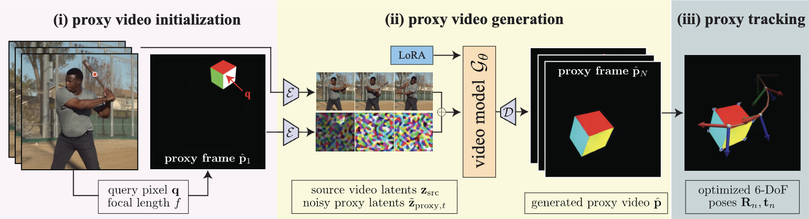

Gallery
Click to switch between 3D tracking visualizations and the generated proxy videos. Select sequences using the thumbnails below.
prompts
tracking
3D visualization

Reflective/textureless surfaces
Ill-defined motion (fluid)
Fast motion (marble racing)